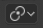

Active Element¶
Reference
| Mode: | Object Mode and Edit Mode |
|---|---|
| Header: |  |
| Hotkey: | Alt-Period |
The active element can be an object, vertex, edge or a face. The active element is the last one to be selected and will be shown in a lighter orange color when in Object Mode and white when in Edit Mode. With Active Element as Pivot set to active, all transformations will occur relative to the active element.

Display of active elements in Object Mode where the active element (cube) is a lighter orange.
Active elements for vertices, edges and faces in Edit Mode are displayed in white.
In Object Mode¶
When in Object Mode, rotation and scaling happen around the origin of the active object. This is shown by the figure to the below where the active object (the cube) remains in the same location (note its position relative to the 3D cursor) while the other objects rotate and scale in relation to the active element.
Rotation and scaling with the cube as the active element.
In Edit Mode¶
Using the active element as a pivot point in Edit Mode may seem complex but all the possible transformations follow a few rules:
- The pivot point is always at the median of the active element.
- The transformations occur by transformation of the vertices of the selected element(s). If an unselected element shares one or more vertices with a selected element then the unselected one will get some degree of transformation also.
Let us examine the following examples: in each case we will see that the two rules apply.
Single Selection¶
When one single element is selected it becomes automatically active. In the image below, you can see that when it is transformed its vertices move, with the consequence that any adjacent element which shares one or more vertices with the active element is also transformed.

Edit Mode and only one element selected.
Let us review each case:
- Faces have their pivot point where their selection dot appears, which is where the median of their vertices is.
- Edges have their pivot point on their middle since this is always where the median of an edge is.
- A single Vertex has no dimensions at all so it cannot show any transformation (except translation, which is not affected by the pivot point).
Multiple Selection¶
When multiple elements are selected they all transform. The pivot points stay in the same place as what we have described above. In the image below, the selected elements have been rotated.

Edit Mode and multiple selections.
- For Faces the transformation occurs around the selection dot of the active face.
- Edges also keep the same behavior with their pivot point at their median.
- There is a case for Vertices this time: the active Vertex is where the pivot point resides. All other vertices are transformed relative to it.